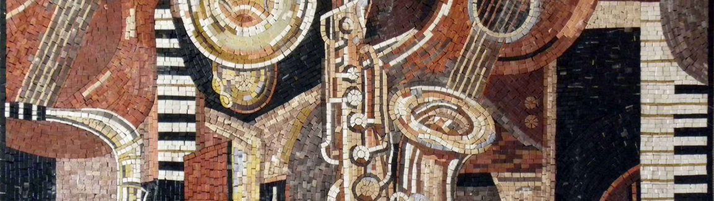

About the event
With our workshops, we aim to encourage people to engage with individuals from diverse cultures. Inclusivity is our focus, as everyone can participate and become a part of our initiative. Recognizing varying interests, we have divided the workshops into two segments: dance and music. The concept involves merging two different music styles from distinct cultures to compose a collaborative song.
The music workshop will occur weekly, featuring a structured and concise plan for a smooth progression. A professional will assist in refining the song and adding that final touch. The dance workshop, scheduled for the last week, will predominantly focus on traditional dances from the two cultures.
Annually, we plan to organize a grand event in collaboration with our partners – a cultural night offering a glimpse into each culture featured in the workshops. This inclusive event invites everyone to participate and contribute, aiming to make it the highlight of the year!